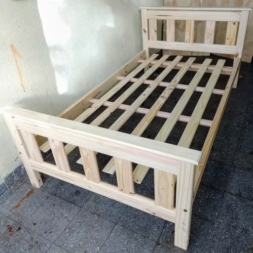
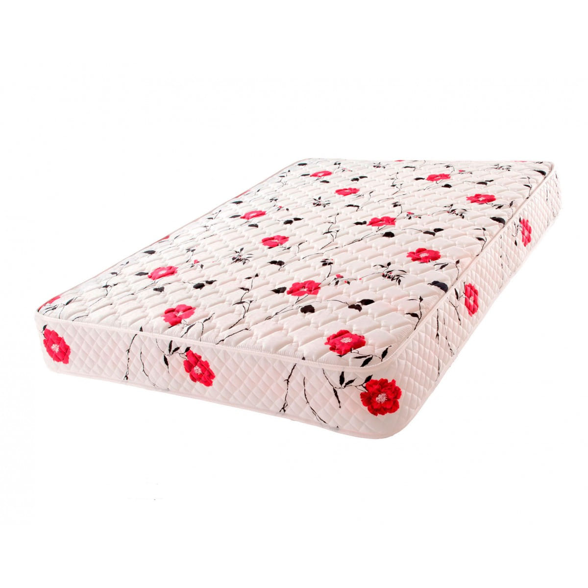
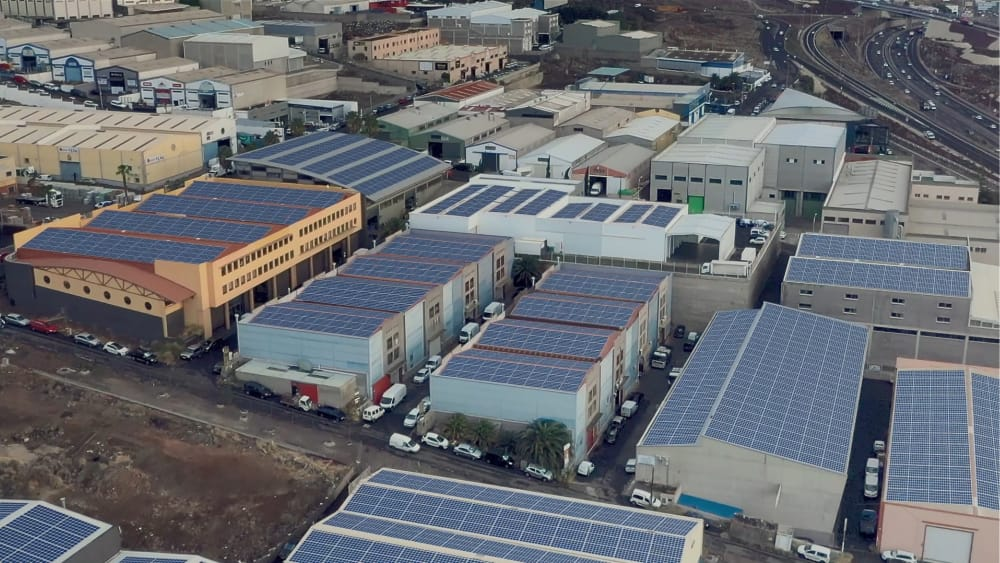
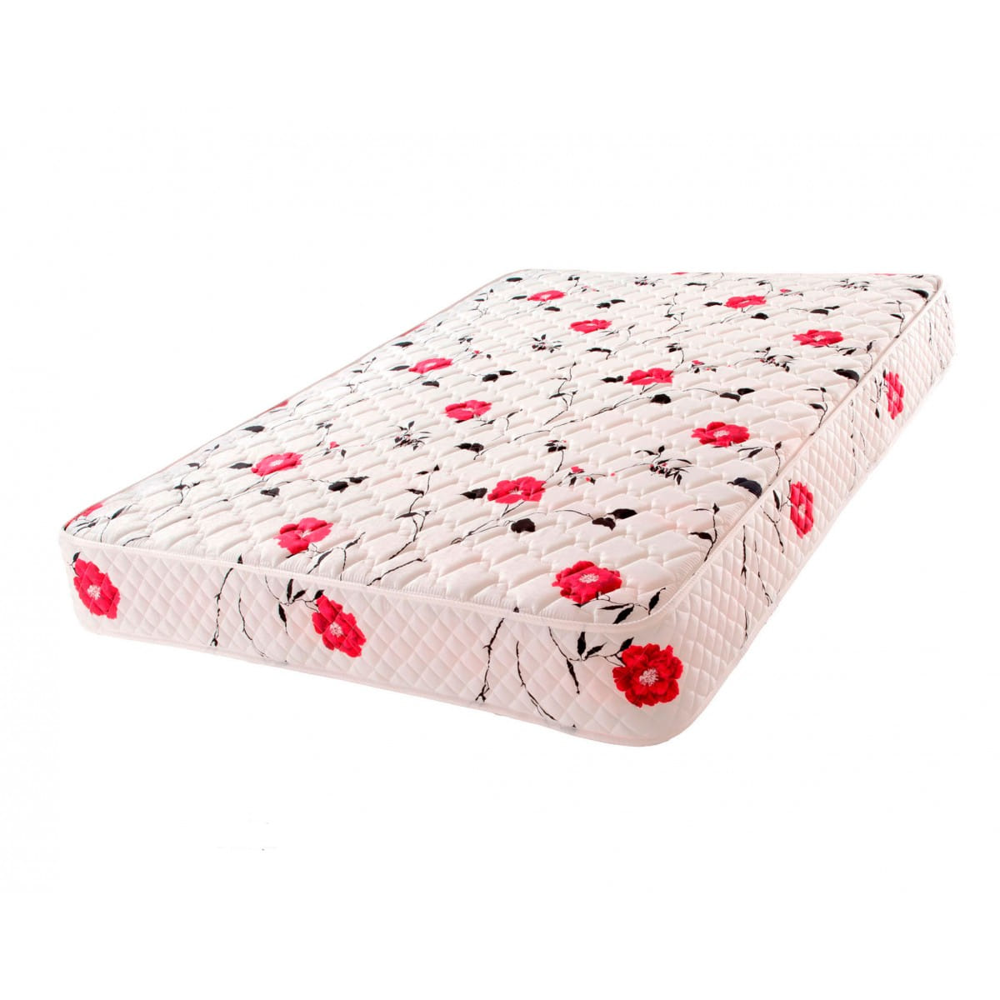
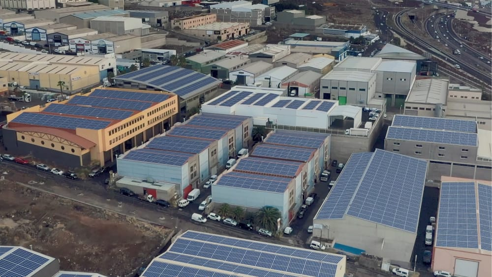
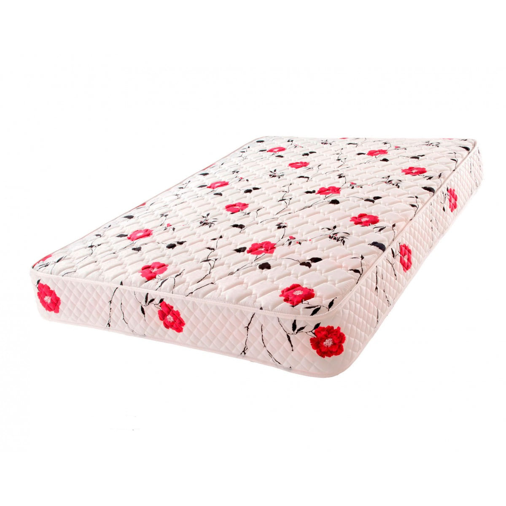
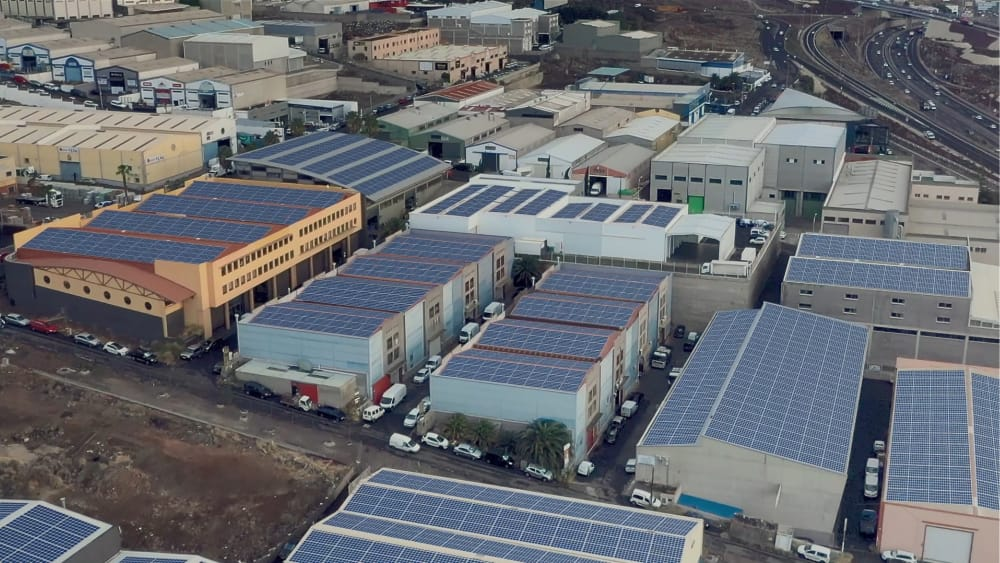

355 necesitamos que las fuerzas armadas combatan la miseria de los malos gobiernos ineficáces teniéndo empresas propias para salvar a la población civil de los dirigentes acomodados inútiles fábricas por ejemplo de alimentos de camas de colchones de viviendas para ayudar a todos los habitantes que los gobiernos esconden sin prestarles atención / Empresas del Siglo XXI Estatales i También Privadas / Multinacional de Seba 60 www

 




